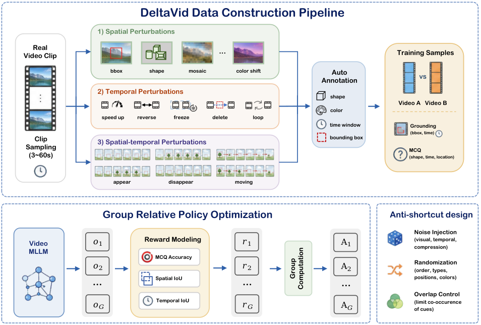
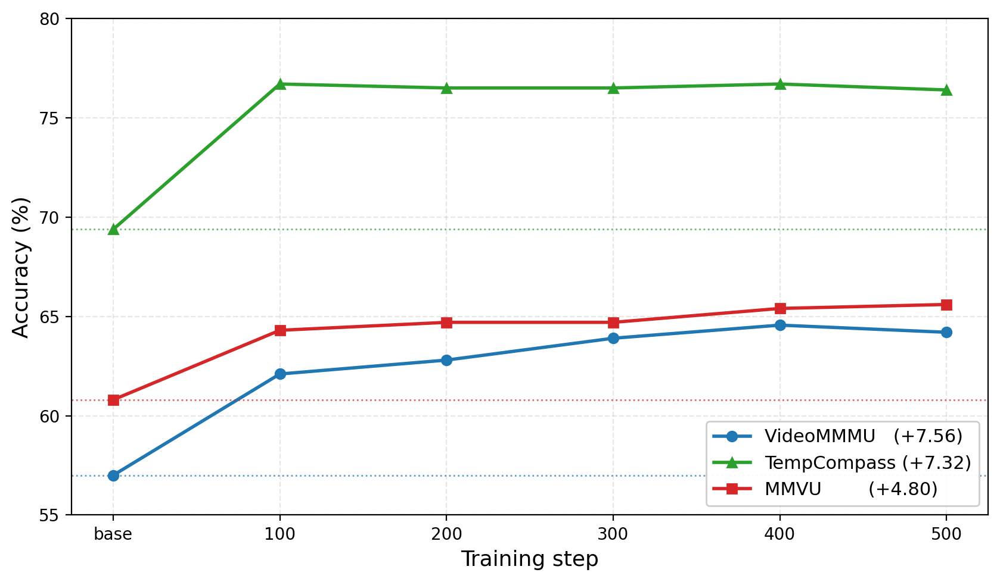

DELTAVID: Enhancing Fine-Grained Spatiotemporal Perception with Cross-Video Differences DELTAVID：基于跨视频差异信号的细粒度时空感知增强
Turning cross-video spot-the-difference into a verifiable perception supervision signal—with DELTAVID-10K and DELTAVID-Bench transferring local evidence reasoning across 8 general video benchmarks.
将跨视频“找不同”转化为可验证的局部时空感知监督信号，推出 DELTAVID-10K 与 DELTAVID-Bench，并显著迁移提升 8 大通用视频理解基准。

Abstract摘要
Video multimodal large language models have made strong progress on open-ended video understanding, but they still lack precise local spatiotemporal perception. When two videos share almost the same global semantics and differ only in a short time span or a small region, current models often fail to find the change and provide reliable evidence.
We propose DELTAVID, a verifiable proxy-task framework that enhances fine-grained spatiotemporal perception with cross-video differences. By turning cross-video spot-the-difference into a trainable perception signal—supported by DELTAVID-10K and DELTAVID-Bench—models learn to identify local changes, judge temporal boundaries, and organize spatial evidence. Experiments show substantial gains on cross-video difference understanding and strong transfer to general video benchmarks including MMVU, MLVU, Video-MME, VideoHolmes, VideoMMMU, LVBench, TempCompass, and LongVideoBench.
当两段视频全局语义几乎一致、仅在短暂时间窗口或局部区域存在细微差别时，现有视频多模态大模型往往难以定位变化并给出可靠证据。本文提出 DELTAVID，将跨视频“找不同”转化为可规模化训练、可客观验证的时空感知代理任务，并构建 DELTAVID-10K 与 DELTAVID-Bench。实验表明，该方法不仅大幅提升跨视频差异理解能力，还将学到的局部证据推理能力有效迁移至 MMVU、MLVU、Video-MME、VideoHolmes、VideoMMMU、LVBench、TempCompass 与 LongVideoBench 八大通用视频基准。
General Video Benchmark Transfer通用视频基准迁移效果

Citation引用格式
@article{keyevideo2026deltavid,
title = {DELTAVID: Enhancing Fine-Grained Spatiotemporal Perception with Cross-Video Differences},
author = {Keye Video Team},
journal = {arXiv preprint arXiv:2607.02551},
year = {2026},
url = {https://arxiv.org/abs/2607.02551}
}